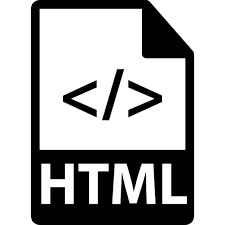

HTML
Sigla en inglés de HyperText Markup Language
lenguaje de marcas de hipertexto),
hace referencia
al lenguaje de marcado para la elaboración de
páginas web.
Es un estándar que sirve de referencia
del software que conecta con la elaboración de
páginas web en sus diferentes versiones, define una
estructura básica y un código (denominado código HTML)
para la definición de contenido de una página web,
como texto, imágenes, videos, juegos, entre otros.
Es un estándar a cargo del World Wide Web Consortium
(W3C) o Consorcio WWW, organización dedicada a la
estandarización de casi todas las tecnologías ligadas
a la web, sobre todo en lo referente a su escritura e
interpretación.
Se considera el lenguaje web más
importante siendo su invención crucial en la aparición,
desarrollo y expansión de la World Wide Web (WWW).
Es el estándar que se ha impuesto en la visualización de
páginas web y es el que todos los navegadores actuales
han adoptado.
- Primeras especificaciones de HTML
- Marcador HTML
- Elementos
- Atributos
- Códigos HTML básicos
- Colores para HTML
- Nociones básicas de HTML
- Aprender HTML analizando páginas reales
- Historia del estándar
- Accesibilidad web
- Entidades HTML
- Véase también
- Referencias
- Bibliografía
- Enlaces externos
